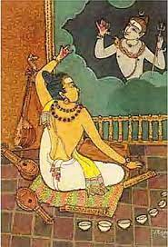

Daṇḍin is a 6th-7th century Sanskrit author of prose romances and expounder on poetics. Although he produced literature on his own, most notably the Daśakumāracarita, first translated in 1927 as Hindoo Tales, or The Adventures of the Ten Princes, he is best known for composing the Kāvyādarśa ('Mirror of Poetry'), the handbook of classical Sanskrit poetics, or Kāvya. His writings were all in Sanskrit. He lived in Kanchipuram in modern-day Tamil Nadu.
kāvyādarśa
The Kāvyādarśa is the earliest surviving systematic treatment of poetics in Sanskrit. It has been shown that Kāvyādarśa was strongly influenced by the Bhaṭṭikāvya of Bhaṭṭi. In Kāvyādarśa, Daṇḍin argued that a poem's beauty derived from its use of rhetorical devices – of which he distinguished thirty-six types.
He is also known for his complex sentences and creation of very long compound words (some of his sentences ran for half a page, and some of his words for half a line).
daśakumāracarita
The Daśakumāracarita relates the vicissitudes of ten princes in their pursuit of love and royal power. It contains stories of common life and reflects a faithful picture of Indian society during the period couched in the colourful style of Sanskrit prose. It consists of (1) Pūrvapīṭhikā, (2) Daśakumāracarita Proper, and (3) Uttarapīṭhikā.
A shloka (hymn) that explains the strengths of different poets says: दण्डिन: पदलालित्यम् "daṇḍinaḥ padalālityaṃ" ("Daṇḍin is the master of playful words").